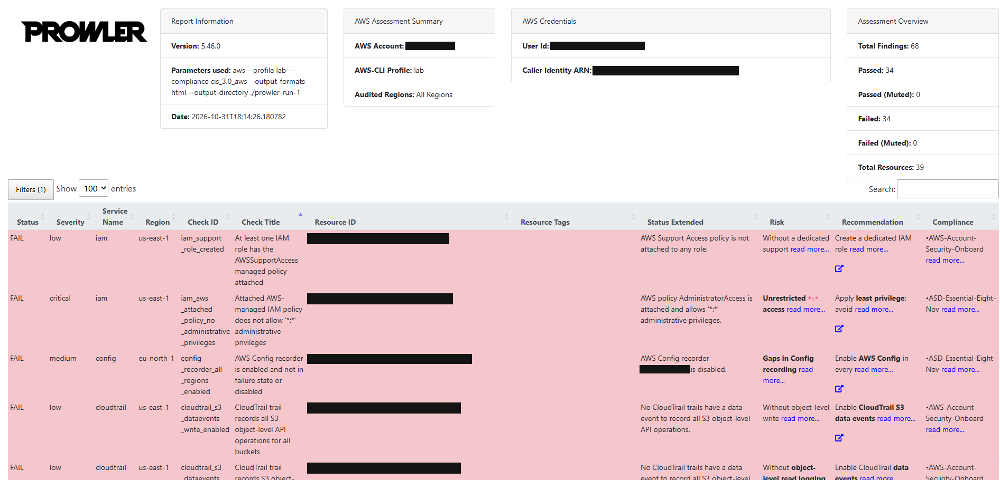
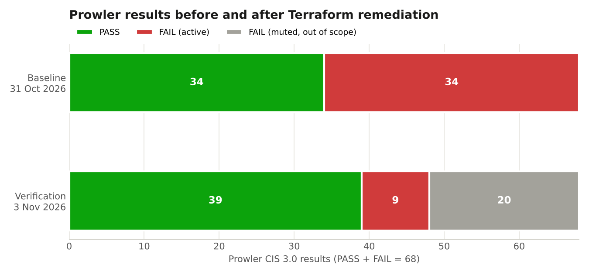

Cloud Security Case Study
AWS Security Posture Assessment against CIS Benchmark v3.0
34 failed security controls. No baseline. No visibility. Here's how I measured it, fixed what mattered, and proved the fix.
34 → 39CIS checks passing
5controls fixed & verified
9active findings, risk-logged
2scans, same tool & identity
SSituation
VaultBridge Financial, a simulated fintech running digital-wallet and payment-settlement services on AWS, had never measured its cloud security posture. It had no baseline and no visibility of misconfigurations.
TTask
Assess the account against the CIS AWS Foundations Benchmark v3.0, triage findings by practical risk, remediate a selected set with Infrastructure as Code, and prove the result with a repeat scan.
AAction
- Ran a baseline Prowler scan across all regions using a dedicated read-only identity (ViewOnlyAccess + SecurityAudit), separate from the identity that makes changes
- Triaged all 34 failures across CloudTrail, IAM, S3, networking and AWS Config, and agreed scope
- Remediated with Terraform: IAM password policy (14+ characters, complexity, 90-day expiry, 24-password reuse prevention), stripped an over-privileged training user, enabled S3 Block Public Access, and enforced HTTPS-only access with a bucket policy
- Added a scoped Prowler mutelist for agreed out-of-scope services, then re-scanned with the same tool, identity and version

RResult

| Control | Before | After |
|---|---|---|
| CIS 1.8 / 1.9 password policy | FAIL | PASS |
| CIS 1.15 training user (no direct policies) | FAIL | PASS |
| CIS 2.1.4 S3 Block Public Access | FAIL | PASS |
| CIS 2.1.1 S3 HTTPS-only | FAIL | PASS |
Honest residual risk: 20 findings (CloudTrail and Config) were muted as out of scope, not fixed. 9 remain active, including standing AdministratorAccess (P1) and an open default NACL (P1). Each one is logged with a priority and a next step. A muted finding is still a failed control.